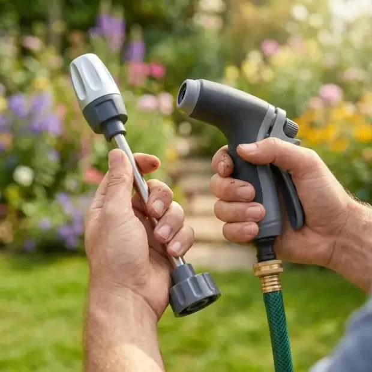

⭐ Jetterix™ Avis · Mis à jour juin 2026
 Testé par Daniel Lambert, Rédacteur Nettoyage Extérieur·Mis à jour juin 2026·Test indépendant en conditions réelles
Testé par Daniel Lambert, Rédacteur Nettoyage Extérieur·Mis à jour juin 2026·Test indépendant en conditions réelles
Jetterix Avis : arnaque ou ça marche ? Cette buse nettoie-t-elle vraiment ?
4.7 ★★★★★ · 8,000 avis
Nous ne sommes pas le vendeur. Nous avons donc mis la buse haute pression Jetterix à l'épreuve sur de vrais travaux — allée, voiture, terrasse, façade. Voici ce qu'elle vaut, les vrais avantages et limites, et la remise officielle du jour.
Disponibilité & jusqu'à -75% » → Aucune électricité
S'adapte à tout tuyau
Satisfait ou remboursé 30 jours
75%OFF
